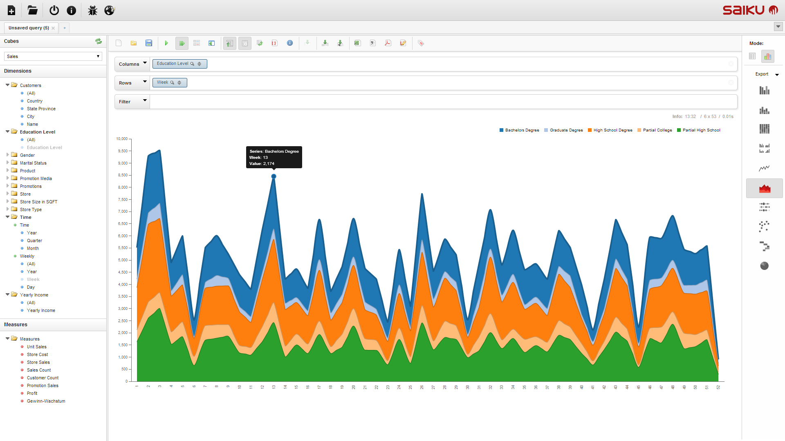
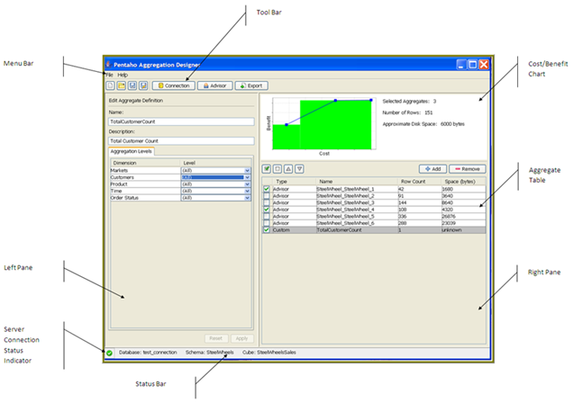

Saiku – taking OLAP databases into 21st century
Tomasz Nurkiewicz
nurkiewicz.com | @tnurkiewicz
Slides: bit.ly/33degree
What is Saiku?
DEMO

Core concepts
- OLAP
- Fact
- Dimension
- Hierarchy
Example facts
- Sold product
- Tweet/forum post/shared photo
- Website hit
- Incoming text message
- ...you name it
Dimension
"Properties of facts"
- When?
- What?
- Where?
- Who?
- How?
Example dimensions
Access log
- Timestamp
- IP
- URL resource
- HTTP response code
Hierarchy
Multi-level aggregation
Example: location hierarchy
- (All)
- Continent
- Country
- State
- City
Measures
- Quantitative properties
- Aggregate matching facts over them
- Count/Sum/Average/Min/Max
Example measures
- Load time (page hit fact)
- Total price (sale fact)
- Age of customer
Charting - DEMO
Exporting - DEMO

Drill down - DEMO

Ignored concepts
- Hypercube
- Mondrian
- MDX
Your own cube

Star schema

ETL
ETL - challenges
- Missing or incomplete data
- Heuristics
- Incremental, periodic updates
- Various data sources
Schema file
<Schema name="Twitter">
<Cube name="Tweets" defaultMeasure="Count">
<Table name="tweet">
<DimensionUsage name="Time" source="Time" foreignKey="time_id"/>
<Dimension name="Location" foreignKey="location_id">
<Hierarchy hasAll="true" allMemberName="All locations">
<Table name="location"/>
<Level name="Continent" column="continent"/>
<Level name="Country" column="country"/>
<Level name="City" column="city"/>
</Hierarchy>
</Dimension>
<!-- ... -->
</Schema>
Schema Workbench

Source: www.stratebi.com/cursos/olap-mdx
Security - users
- Standard user/password
- Roles
- Spring Security - customizable
Security - data
- By role
- Restrict what can be seen
- Top/bottom limit
Performance
Big data, before it was cool
- Indexes on foreign keys
- Aggregate tables
Without Aggregate table
SELECT COUNT(id)
FROM tweet NATURAL JOIN locations
GROUP BY locations.continent
With aggregate table
INSERT INTO agg (cnt, l.city, l.country, l.continent)
SELECT COUNT(t.id) AS cnt, city, country, continent
FROM tweet t NATURAL JOIN locations l
GROUP BY l.city
Usages:
SELECT SUM(agg.count)
FROM agg
GROUP BY locations.continent
Pentaho Aggregation Designer
Deployment
mondrian.jar- enginesaiku.war- RESTful web servicesui.war- JS front-end
Disadvantages
- Horizontal scalability?
- Stuck with SQL databases
- Complex schema definition (XML)
- Aggregate tables are hard
Thank you!